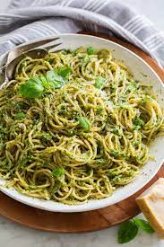

Pesto pasta

This quick and easy pesto pasta is a delicious vegetarian weeknight dinner!
I like to add a handful of arugula, but feel free to skip it or use your favorite soft greens in its place.
Ingredients
- 6 ounces spaghetti
- 4 cups arugula
- 2 tablespoons pine nuts
- 1/3 to 1/2 cup basil pesto or vegan pesto
Steps
- Cook the pasta in a large pot of salted boiling water according to package directions or until al dente. Reserve 1/2 cup of the starchy cooking liquid before draining. Drain the pasta and toss with a tiny bit of olive oil.
- In a large skillet over very low heat, add the pesto, 1/4 cup of the reserved pasta water and stir to combine. Add the pasta and toss to coat, and more pasta water as needed to create a loose sauce. The amount of water needed will depend on thickness of your pesto.
- Turn the heat off. Add lemon juice, salt, and pepper, to taste. Then, add the arugula and toss to barely wilt. Garnish with the red pepper flakes and pine nuts and serve.